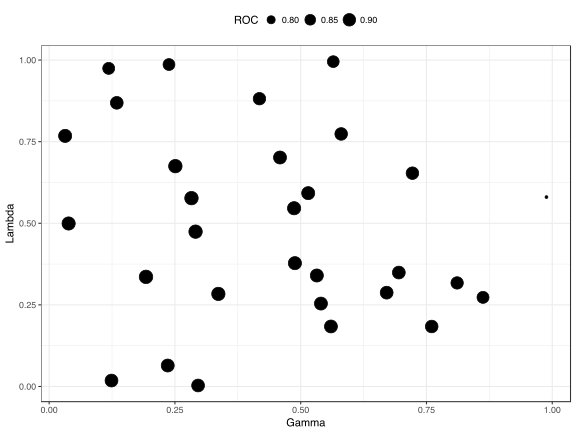

10 Random Hyperparameter Search
The default method for optimizing tuning parameters in train is to use a grid search. This approach is usually effective but, in cases when there are many tuning parameters, it can be inefficient. An alternative is to use a combination of grid search and racing. Another is to use a random selection of tuning parameter combinations to cover the parameter space to a lesser extent.
There are a number of models where this can be beneficial in finding reasonable values of the tuning parameters in a relatively short time. However, there are some models where the efficiency in a small search field can cancel out other optimizations. For example, a number of models in caret utilize the “sub-model trick” where M tuning parameter combinations are evaluated, potentially far fewer than M model fits are required. This approach is best leveraged when a simple grid search is used. For this reason, it may be inefficient to use random search for the following model codes: ada, AdaBag, AdaBoost.M1, bagEarth, blackboost, blasso, BstLm, bstSm, bstTree, C5.0, C5.0Cost, cubist, earth, enet, foba, gamboost, gbm, glmboost, glmnet, kernelpls, lars, lars2, lasso, lda2, leapBackward, leapForward, leapSeq, LogitBoost, pam, partDSA, pcr, PenalizedLDA, pls, relaxo, rfRules, rotationForest, rotationForestCp, rpart, rpart2, rpartCost, simpls, spikeslab, superpc, widekernelpls, xgbDART, xgbTree.
Finally, many of the models wrapped by train have a small number of parameters. The average number of parameters is 2.
To use random search, another option is available in trainControl called search. Possible values of this argument are "grid" and "random". The built-in models contained in caret contain code to generate random tuning parameter combinations. The total number of unique combinations is specified by the tuneLength option to train.
Again, we will use the sonar data from the previous training page to demonstrate the method with a regularized discriminant analysis by looking at a total of 30 tuning parameter combinations:
library(mlbench)
data(Sonar)
library(caret)
set.seed(998)
inTraining <- createDataPartition(Sonar$Class, p = .75, list = FALSE)
training <- Sonar[ inTraining,]
testing <- Sonar[-inTraining,]
fitControl <- trainControl(method = "repeatedcv",
number = 10,
repeats = 10,
classProbs = TRUE,
summaryFunction = twoClassSummary,
search = "random")
set.seed(825)
rda_fit <- train(Class ~ ., data = training,
method = "rda",
metric = "ROC",
tuneLength = 30,
trControl = fitControl)
rda_fit## Regularized Discriminant Analysis
##
## 157 samples
## 60 predictor
## 2 classes: 'M', 'R'
##
## No pre-processing
## Resampling: Cross-Validated (10 fold, repeated 10 times)
## Summary of sample sizes: 141, 142, 141, 142, 141, 142, ...
## Resampling results across tuning parameters:
##
## gamma lambda ROC Sens Spec
## 0.03177874 0.767664044 0.8662029 0.7983333 0.7600000
## 0.03868192 0.499283304 0.8526513 0.8120833 0.7600000
## 0.11834801 0.974493793 0.8379266 0.7780556 0.7428571
## 0.12391186 0.018063038 0.8321825 0.8112500 0.7233929
## 0.13442487 0.868918547 0.8590501 0.8122222 0.7528571
## 0.19249104 0.335761243 0.8588070 0.8577778 0.7030357
## 0.23568481 0.064135040 0.8465402 0.8372222 0.7026786
## 0.23814584 0.986270274 0.8363070 0.7623611 0.7532143
## 0.25082994 0.674919744 0.8700918 0.8588889 0.7010714
## 0.28285931 0.576888058 0.8706250 0.8650000 0.6871429
## 0.29099029 0.474277013 0.8681548 0.8687500 0.6844643
## 0.29601805 0.002963208 0.8465476 0.8419444 0.6973214
## 0.31717364 0.943120266 0.8440030 0.7863889 0.7444643
## 0.33633553 0.283586169 0.8650794 0.8626389 0.6878571
## 0.41798776 0.881581948 0.8540253 0.8076389 0.7346429
## 0.45885413 0.701431940 0.8704588 0.8413889 0.7026786
## 0.48684373 0.545997273 0.8713442 0.8638889 0.6758929
## 0.48845661 0.377704420 0.8700818 0.8783333 0.6566071
## 0.51491517 0.592224877 0.8705903 0.8509722 0.6789286
## 0.53206420 0.339941226 0.8694320 0.8795833 0.6523214
## 0.54020648 0.253930177 0.8673239 0.8747222 0.6546429
## 0.56009903 0.183772303 0.8652059 0.8709722 0.6573214
## 0.56472058 0.995162379 0.8354911 0.7550000 0.7489286
## 0.58045730 0.773613530 0.8612922 0.8262500 0.7089286
## 0.67085142 0.287354882 0.8686062 0.8781944 0.6444643
## 0.69503284 0.348973440 0.8694742 0.8805556 0.6417857
## 0.72206263 0.653406920 0.8635937 0.8331944 0.6735714
## 0.76035804 0.183676074 0.8642560 0.8769444 0.6303571
## 0.86234436 0.272931617 0.8545412 0.8588889 0.6030357
## 0.98847635 0.580160726 0.7383358 0.7097222 0.6169643
##
## ROC was used to select the optimal model using the largest value.
## The final values used for the model were gamma = 0.4868437 and lambda
## = 0.5459973.There is currently only a ggplot method (instead of a basic plot method). The results of this function with random searching depends on the number and type of tuning parameters. In this case, it produces a scatter plot of the continuous parameters.
ggplot(rda_fit) + theme(legend.position = "top")